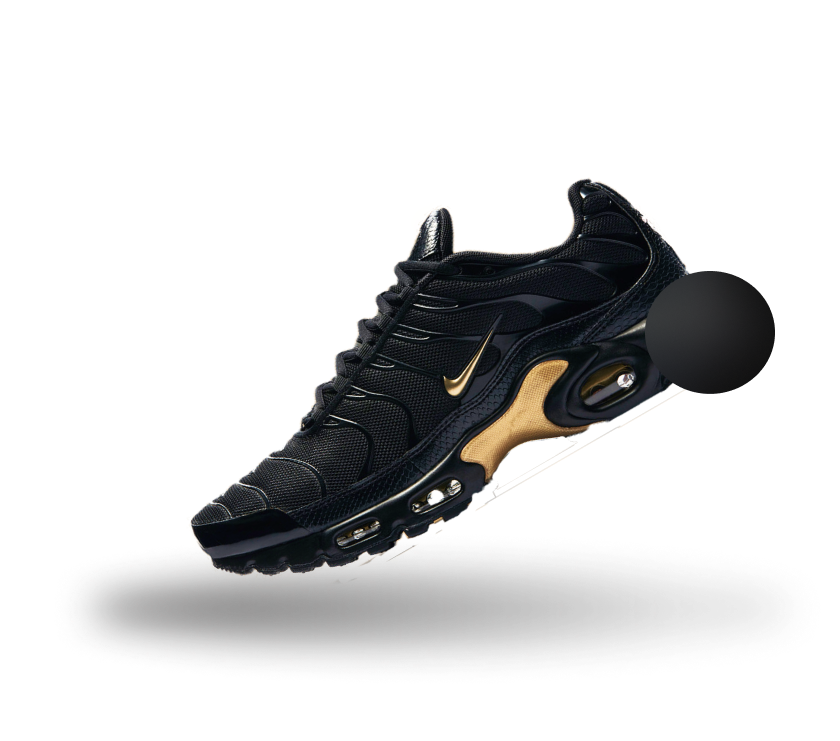

Air Max
Nike Air Max 90
S/ 450.00
Nike Air Max es una línea de calzado producida por Nike, Inc.,
con el primer modelo lanzado en 1987. Los zapatos Air Max se identifican por su
entresuela que incorporan bolsas de uretana flexibles llenas de
gas presurizado, visibles desde el exterior del zapato y destinado
para proporcionar amortiguaciono a la planta del pie.
